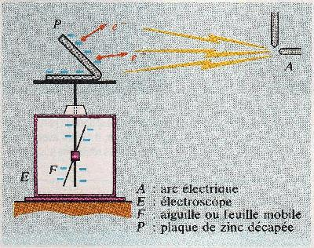
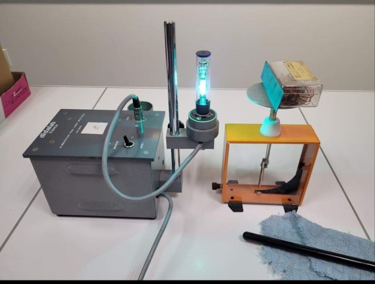
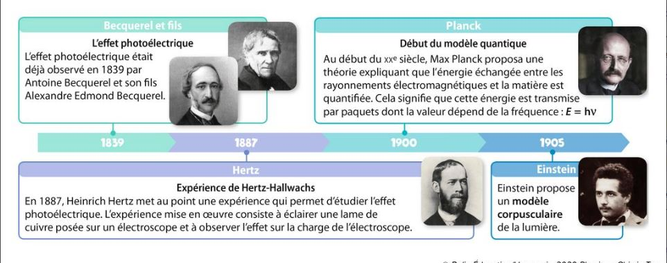
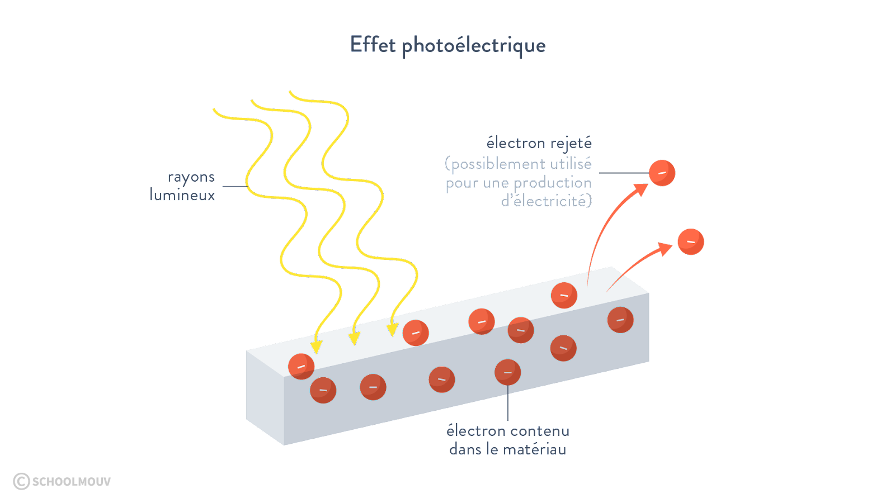

________________________________________________________________
Son dispositif est composé d'une plaque métallique
reliée à un électroscope, ayant pour rôle de signaler le
passage d'un courant électrique. La plaque métallique
était en zinc. Le faisceau lumineux résultait d'un
arc électrique. L'arc électrique est riche en rayonnements
ultraviolets qui ont produit l'effet photoélectrique.


________________________________________________________________
Aspect historique de l’effet photoélectrique:

________________________________________________________________
On désigne sous le nom d'effet photoélectrique tous les phénomènes électriques qui sont provoqués par l'action de la lumière sur la matière. Lors de l’absorption des ondes électromagnétiques par le solide celui-ci entraîne l’expulsion d'électrons dans le vide ou dans le milieu qui est en contact avec lui : on parle alors d'émission photoélectrique

________________________________________________________________
image photoelectrique
l'effet photoélectrique, l'onde électromagnétique incidente éjecte les électron du matériau